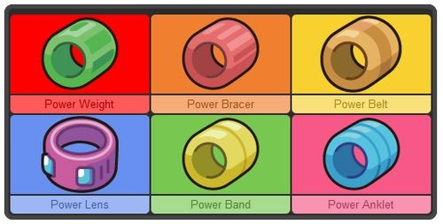

Raising your team
Even with the best constructed team, you'll find that just catching your chosen pokemon in the wild and using them online will give you poor results. This is because most competetive teams are specifically raised for battling. With the help of this page, you too can learn how to properly raise a team.
Every pokemon has the following stats: HP, Attack, Defense, Special Attack, Special Defense, and Speed. Different species of pokemon have different stats that are really high for them, and those that are pretty low. For example, any Blissey will have extremely high HP, whereas any Shuckle will have much lower HP. Conversely, Blissey's defense pales in comparison to the monstrous defense stat held by Shuckle. However, you may have noticed that pokemon of the same species often end up with different stats. This is because each stat of each individual pokemon is modified by an unchanging number called an Internal Value, or IV for short. This is a number between 0 and 31 that decides how high that stat will grow; A pokemon with a 0 in attack will have a lower attack than the same pokemon with a 31 in attack. While these values can't be changed, they can be passed on through breeding.
First, you'll want to figure out what your IV values actually are. There are plenty of IV calculators online that can assist with this, though these generally don't work on pokemon that have been leveled up since being caught (for reasons that will be explained later on this page). In later games, there is usually a way to see your pokemon's 'potential', which is a direct way of seeing the IVs your pokemon has. In sun and moon, for example, a man in the battle tree can be spoken to to unlock the ability to see the IVs of any pokemon you have. Many games also have a way to get pokemon with a number of their stats guaranteed to have an IV of 31, such as SOS battles and the PokeRadar. Once you've found a pokemon with a decent number of perfect stats, its time for you to hatch some eggs.
If you're on this site, you've probably already done some pokemon breeding on your own, if for nothing else but to get another copy of your starter. For starters, a pokemon will always be the same species as either its mother or its non-ditto parent. When a pokemon is bred, it inherits 3 of its IVs from its parents, chosen at random from either one, and its other three IVs become a random number between 0 and 31. However, if one of the parents is holding a destiny knot, 5 of its IVs are inherited from its parents, with only one being randomly rolled. This way, you can more easily make a pokemon with almost perfect stats. By continuously breeding generations of pokemon, you can eventually create a pokemon with battle-ready stats.
Breeding can also be used to pass on certain natures. A pokemon's nature gives a 10% boost to one stat, whilst applying a 10% penalty to another. Thus, having a pokemon with the right nature can make the pokemon that more effective at online play. A pokemon holding an everstone will pass its nature down to all of its children, allowing this aspect to be easily decided via breeding.
Finally, certain moves can be passed on via breeding. These moves, known as 'egg moves', are generally moves that the pokemon cannot learn by leveling up, and aren't available via TM or tutor. Any move in the 'Egg Move' list that is known by one of the pokemon's parents will be known by the pokemon once it hatches. This is, for example, the only way that Garchomp can learn the move 'Outrage', which is a powerful dragon-type move it would otherwise miss out on. Having powerful egg moves available can make your pokemon even more effective at taking down its opponents.
Once you have the pokemon with the stats and nature you want, its time to raise it. However, raising a pokemon requires more than just increasing its level. A pokemon's stats are also decided by its Effort Values, or EV for short. EVs are a number between 0 and 255, assigned to each stat, that increase that stat. The total number of EVs a pokemon has, however, cannot ever exceed 510, and EVs only have an impact on base stats in increments of 4. EVs are gained through battle, and also through certain items. If you've ever used a protien or a carbos on your pokemon, you'll notice that they get a permanent stat boost to the corresponding stat. This is because these items increase that pokemon's corresponding EV in that stat by 10. The cheapest way to get EVs, however, is by fighting specific pokemon. Each species of pokemon has something called an "EV yield", which determines the EV reward a pokemon gets for defeating it. The EV yield determines the stats, as well as the number of EV points, awarded to the pokemon that defeats it. Bulbapedia has the EV yield for a pokemon listed in each pokemon's page, making it an excellent resource when deciding what pokemon to farm for EVs.
Due to the 510 total EV limitation, combined with the minimum useful increment of 4, most EV values tend to follow a pattern of putting 254 EVs each into the two most important stats, and then 4 EVs into one other stat, usually Special Defense or Defense. For attackers, these two stats tend to be attack and speed. Physically bulky pokemon can also choose hp and defense as these two stats. While different strategies will require vastly different EV spreads, this basic guideline is extremely effective for how simple it is to decide, making it ideal for beginners.
When gaining EVs, certain held items can be extremely useful. If a pokemon is holding a power item, for example, any EVs they gain from battle in the corresponding stat are doubled in value. Additionally, a pokemon with the rare 'PokeRus' status will gain EVs twice as fast. This can help make gaining EVs much quicker and easier, allowing you to enter competetive pokemon much sooner.